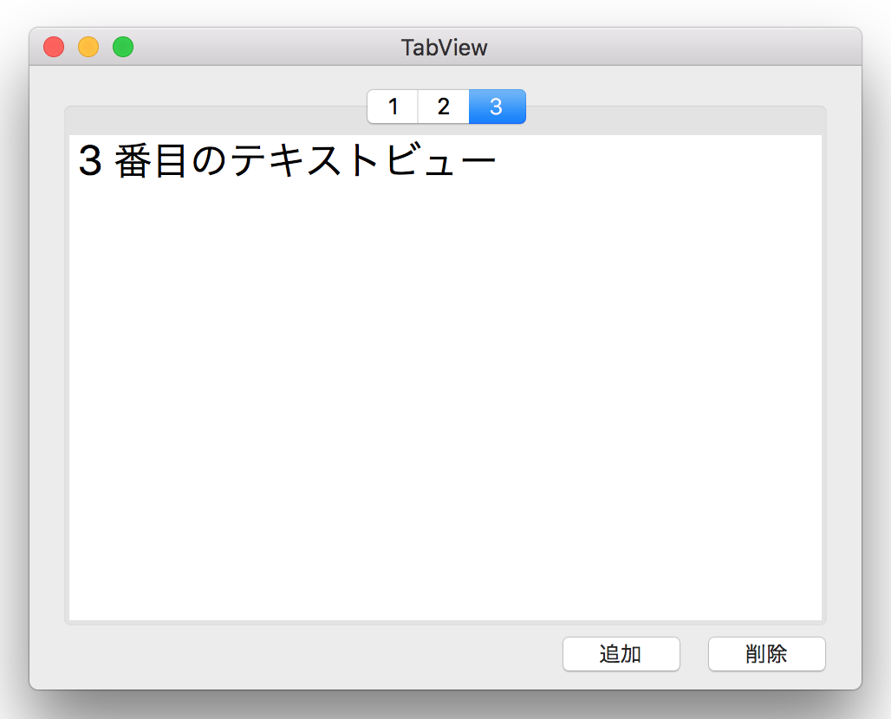

<!-- 
NewPractice_Swift/10 TabView
-->
<DOCTYPE HTML>
<html id="mainhtml">
<head>
  <meta http-equiv="Content-Type" content="text/html; charset=utf-8">
  <title>タブビューを作成する</title>
    <link rel="stylesheet" type="text/css" href="/lib/document.css">
</head>
<body id="mainbody">
<!-- ↓↓↓↓↓↓↓↓↓↓↓ -->
<script type="text/javascript" src="/lib/funcs2.js"></script>
<!-- ↑↑↑↑↑↑↑↑↑↑ -->
<!--div class="lm70 tm0" style="width:550px; border-top:solid 1px #909090;"></div -->
<div id="content">
<h2 class="lm70 tm20 bm10">タブビューを作成する</h2>
<!-- 画像 -->
<a href="/lib/HTMLofVideo.html?filename=/data/B26/tabView.mp4&title=tabView&width=500" target="_new">
</a>
<div class="lm70 tm10 rm60">
画像をクリックすると動画になります。
</div>
<div class="lm70 tm20 bm0 rm60">
タブビューのタブをプログラムで作成し、UIから動的に追加、削除する。タブにはテキストビューを貼り付ける。
</div>
<!-- ソースコード -->
<iframe class="lm70 tm5" src="/lib/HTMLofText.html?filename=/data/B26/AppDelegate.txt" width="580" height="670"></iframe>
<div class="bp40"></div>	<!-- 空白行 -->
<!----------------------------------------------->
</div><!-- end of content -->
<footer id="mainfooter">
<div class="tp10 bm10 bp10 textright"> <span class="rm500 font80"><a href="/lib/index2.html">メニューに戻る</a></span><span class="rm20 font80"><a href="#mainheader">TOPに戻る</a></span></div>
</footer>
<script type="text/javascript" src="/lib/access/access2.js"></script>
</body>
</html>


